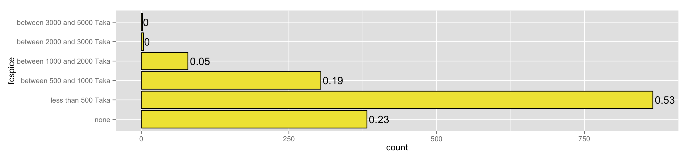
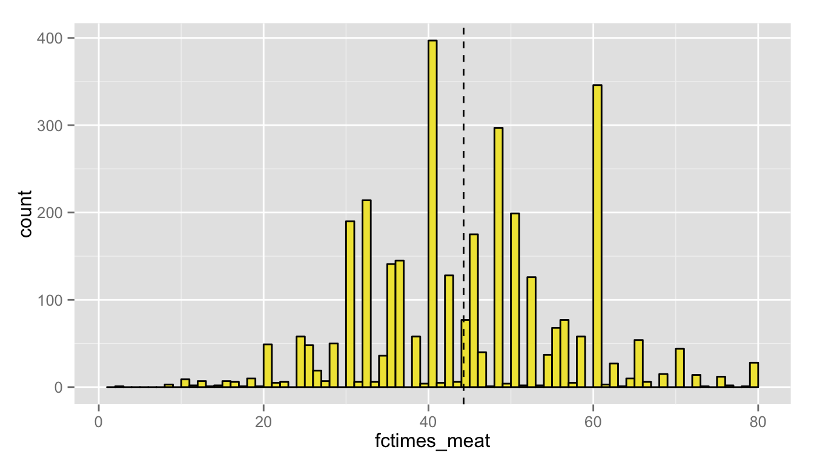
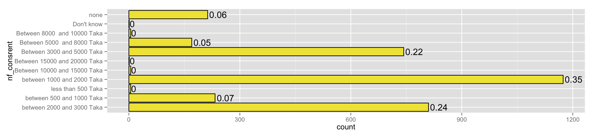
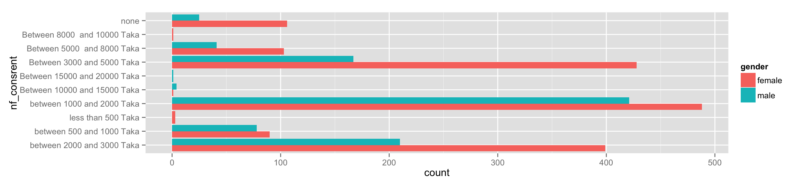
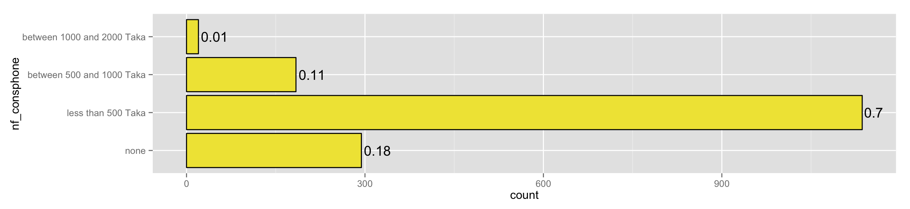
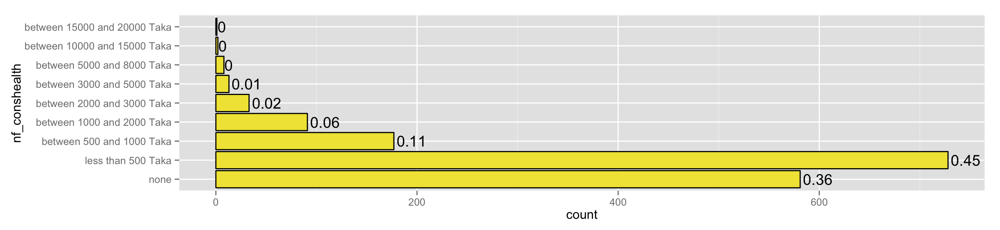
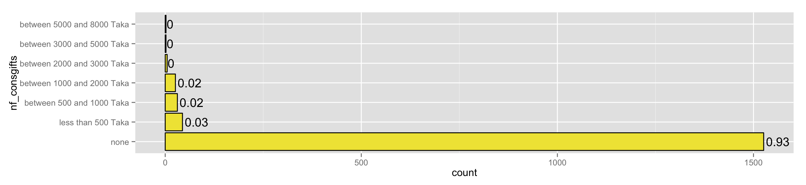
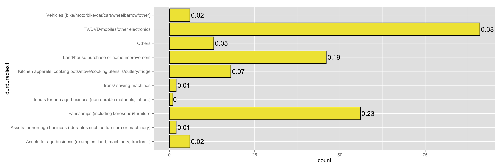

Most spend between 1-2K monthly on rice (top) and meat (bottom):
Sugar, tea and coffee, other food and drink consumed outside the house, special goods such as sweets, packaged snacks, soft drinks etc: 
Most eat fish/meat more than once a day (original question was how many times in last 30 days?):

Most spend as much as they do on rice as they do on rent: 
Noteworthy that women spend more in nearly each tranche than do men: 
Transportation costs for work:
to visit family/friends:
phone expenses: 

very few respondents spent much, if anything, on non-festival related gifts: 
likewise on non-festival related entertainment (anything music, meals outside at restaurant, cinema, books etc):
increase in spending for ceremonies and festivals:
Seems like a very broad category! Clothes, shoes, jeweley, cosmetics, soap, toiletry products etc.:
Apart from all of the above, only 8% of respondents made any purchases that cost more than 1000 Thaka in the last month:
of those 8%, those purchases fell under: 
#sugested variables to keep:
"fcrice"
"fcmeat"
"fcspice"
"fctimes_meat"
"nf_consrent"
"nf_constrans_w"
"nf_constrans_fam"
"nf_consphone"
"nf_consedu"
"nf_conshealth"
"nf_consgifts"
"nf_consentertain"
"nf_consfestiv"
"nf_consclothes"
"durmore_1000"
"durdurables1"